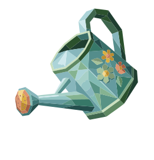

kizuku
design system
06
the daily ritual
The loop the whole product exists for, built entirely from section 04. The one structural change: the tab bar leaves after the garden and comes back at the growth — six screens with nothing to tab out to.
In the current build the tab bar sits on every flow screen, sixteen pixels under the primary button. It is the only thing on those screens that isn't part of the ritual, and it is the easiest way out of it.


kizuku
day 8 · the optimiser
what's on your mind today?
share a worry and get your action
garden
pattern
you
i
Garden
The only screen in the loop with navigation. Day count sits under the brand, where the build had nothing.
today
what future worry is on your mind right now?
i keep worrying that i will not finish this project in time.
be specific. the more honest you are, the better your action will be.
private · stays on this device
get my action
ii
Worry
Tab bar gone. The button holds the bottom of the screen instead of hovering 92px above it.
sitting with what you wrote…
picking one small thing…
iii
Thinking
No chrome at all. The second line fades up at 900ms; the figure runs ambient/breath.
your action for today
one thing. right now.
reframe
write your worry as a question. then close the notebook. the question will do its own work.
five minutes is enough. how well you do it doesn't matter.
i'll do it now
this doesn't feel right
iv
Action
The only lifted card in the product, and the only body/lg serif. It should read like something handed over.
you came back
what happened when you did it?
no judgement. just what happened.
your plant grows after you answer this.
i didn't do it — that's ok
my plant is ready to grow
v
Reflection
The skip is stone/700 rather than stone/500 — the kind exit shouldn't also be the faintest thing on screen.
something grew.
your garden now holds eight moments of showing up.
see my garden
vi
Growth
display/lg appears exactly once in the product, here. Counting moments, not days — the brief rules out streaks.